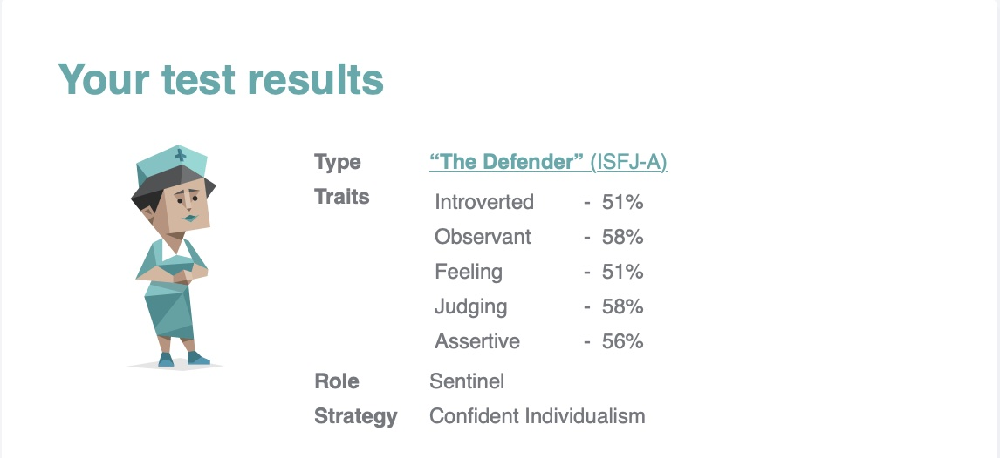

I like to become an IT specialist after doing my degree of Information Technology at the university and to able to work into my career choices. Technology is changing and it gives me the skills to learn and develop my IT career. I will like to become IT specialist to be able to learn to and gain the opportunity to become an IT expert.
My interest in IT started when I was studying at the high school and went on to TAFE, and had a friends that was interested as well studying IT. I have chosen to study IT with RMIT Online because it is a degree that I would study and it also flexible. I would like to learn how to be an IT specialist as well as being an expert and gain experience to my chosen career.
Is to make a difference in my idea job and difference in life. It also gives me the opportunity to gain with stability and with IT professionals. It’s a great idea and career for me to work as an IT specialist. It is my idea job, I have study IT before and now i am doing this course to further my career.
I am reliable and keen to do this IT course to progress my career in IT. Including some roles such as Information Security analyst, Network architects and Web developers. The test means the type of strengths and weaknesses and to understand your personal profile that influence the behaviour and forming a team.
The project is to process new products and services. Also to meet the changes of meeting a new project and as well to manage the services and results and requirements. In IT today some projects are managed as programs to coordinate and to give to the team and project manager to ensure the success of the program. To learn new projects and technics that will apply to a variety of IT projects and to manage the projects requirements in IT. To Performing a strategy and assigning tasks. To determine the project purpose and resources and project roles and ideas. A project idea is also a resources.
Managers and organization they have motivation as perform tasks and duties as well as techniques of an organizations. Technology is used to develop an understanding of an objectives. Building a team or project is also a way of motivation. It is also a purpose of productivity. Motivation is an attribute that enhances your projects. Motivation also helps us gain information can also help with problems and issues and feedback. It can help to process information and doing a task or a project. It helps distribute and helps us with better ideas and adds values to helps us operate. Motivation is a task of information and efficiency that helps us with issues.
The features of the product and service are online websites, improving products, infrastructure and services and to gather information. IT applications is a product to produce information develop skills and provide services. It can also help with managing issues. It is also a skills that are needed to provide services and to maintain and enable to operate. It provides technology to provide and create a solution and sustain and analyse the services
IT product and service can help with data entry, design and management of the product that helps the IT services and web host. The features is define and help to focus on IT based services for the IT product and services. It is also an aspect of the features to implement services and product. It gives solutions to help with product to sustain.
In Technology the services are to help with implementing the services and products of the feature. It provides services to IT services and for improvements for the feature and products. When It has produce information to the services it helps with information and to create the important and efficiency to help with the services that was produce from technology. Also it help with implementing different services to sort product and service and to improve efficiency of the feature or product. It helps with managing IT issue and technical issues that needs to change or improve the product. The important of it is to analyse the products of the service to features of an It project.
The IT services are a task of process that services help to design solution. The solution than provide information to give IT service to improve the feature or product. Software are application to operate to support and manage the IT service. Database storage is a storage of files. Service can be internet web pages that is online for gaining and helping with issues that needs to perform certain important information. Infrastructure are a type of technology feature that help balance firewalls to configure self service to operate infrastructure and to run a software, it can be a storage, connections, servers it can help with the providing infrastructure.
Operations system is a product or an input of data that provides that helps with database. Information system is a set of components that process that maintaining different type of operational systems. Information systems is a technology manage the technology to support operations.
Information service is an information system that collect and store information. Information system Is also a hardware, software and data to produce information that is needed to analyse. It is a requirement to process the certain types of procedures to recognise the problems issues of information collecting to determine and design to implement the system specifications.
The products are stored objects, products can either be tangible and intangible, services are tangible. The difference is that services and products are based on different factors. Products and services are features that are known for IT services also it provides information to analyse and develop the elements for an IT service.
Software Application Software applications are stored data or information on a device to connect connectivity for the IT service. A cloud computing is a service that sends data or information over the internet, to make IT services to operate easier and more efficient. Device and hardware, software is a technology that process the device to improve and collecting information for an IT service. That can help with the hardware and software. IT technology tools has different process to maintain and creating software and process of different technology tools that is known as software. It is a software that IT store on a device.
Project skills are needed for the role of a project has to implement the project, as well to assess project information to allocate and manage the project. It also help to troubleshoot and deliver the product and services. Skill is also to manage software or project of an IT service to produce to skills that is need to require. Skills is also necessary to gain resources, gain expertise and to ensure the project that is needed to require information and to analyse IT needs technology and solutions for an IT service. Solutions will maintain and improve to help and with the software that are require for the skills.
It will give us the strive to create a better project and other projects. Also gives a better quality of the outcome and to develop a better outcome for the project and to improve define a better solution of the project. Is to determine to the project outcome to implement projects by the source of information that is collected to store and develop better projects. In Information technology the outcome will help develop a better system and better project and as well as better improvement to the project and technical solutions in the concept of an IT skills and to analyse the project.